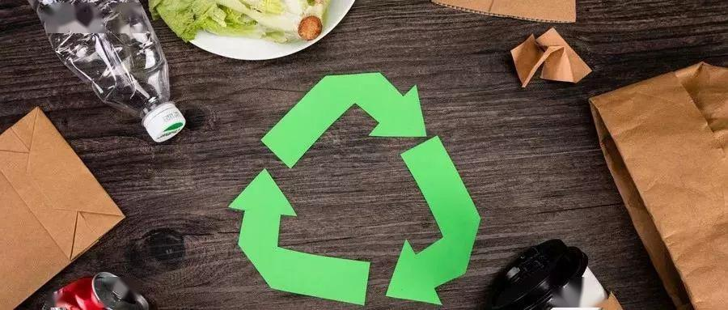
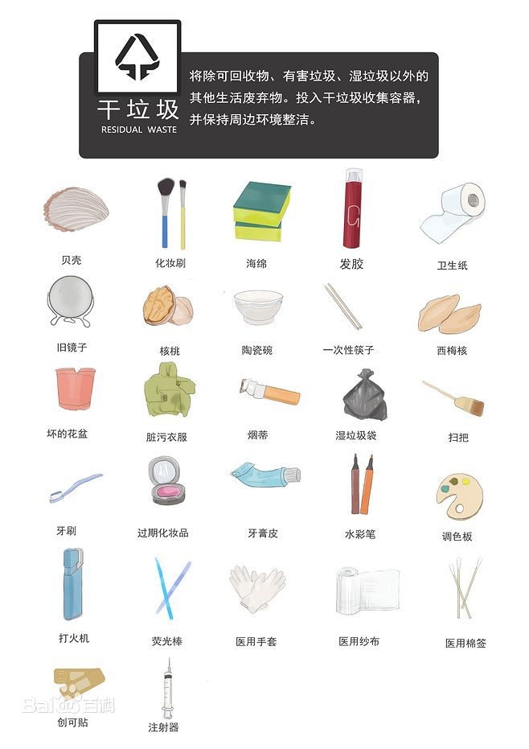
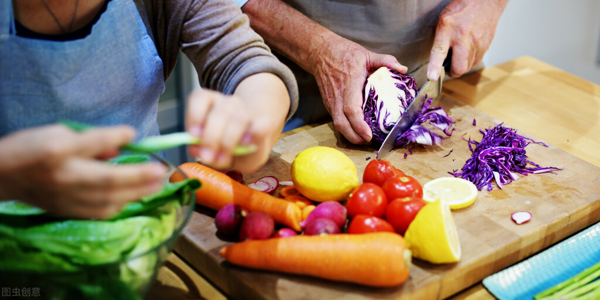
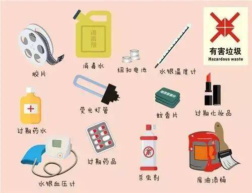

垃圾分类

大体包括
可回收垃圾是一种可回收的垃圾分类。一般的可回收垃圾可分为下列数种：- 塑胶
- PET
- HDPE
- LDPE
- 金属
- 铁（铁罐和其他铁制品）
- 非铁金属（铝罐、铜片和其他金属制品)
- 玻璃（回收制成新的玻璃容器或当做粒料）
- 纸（可直接回收的可生物降解废物）
- 可生物降解废物，可以用做堆肥或生化气体
具体详情
- 废纸张
- 平面纸张：书本、报纸、复印纸、宣传单、包装纸、信封、硬纸板等
- 纸盒（箱）：纸板箱、包装盒（如点心盒、纸巾盒）、牛奶（饮料）包装等
- 废塑料
- 瓶类：PET塑料瓶（矿泉水瓶、饮料瓶）、硬质塑料瓶、塑料油桶、乳液罐等；
- 其他容器类：塑料盒（如冰激凌盒）、塑料杯（如酸奶杯、果冻杯）、软桶、塑料衣架、塑料玩具等；
- 包装类：塑料袋、保鲜袋（膜）、包装袋（如零食包装袋、快递包装袋）、 塑料泡沫、气泡缓冲材料、水果网套、热饮（如咖啡杯）杯盖等；
- 其他塑料制品：废弃塑料文具等。

干垃圾即其它垃圾，指除可回收物、有害垃圾、湿垃圾以外的其它生活废弃物。
干垃圾包括废弃的纸张、塑料、玻璃、烟头、 金属、织物等，还包括报废车辆、家电家具、装修废弃物等大型的垃圾。
有害有毒垃圾必须单独收集、运输、存贮，由环保部门认可的专业机构进行特殊安全处理。

湿垃圾（英文名称：organic waste）又称为厨余垃圾、有机垃圾，即易腐垃圾，指食材废料、剩菜剩饭、过期食品、瓜皮果核、花卉绿植、中药药渣等易腐的生物质生活废弃物。
湿垃圾是居民日常生活及食品加工、饮食服务、单位供餐等活动中产生的垃圾， 包括丢弃不用的菜叶、剩菜、剩饭、果皮、蛋壳、茶渣、骨头、动物内脏、鱼鳞、树叶、杂草等， 其主要来源为家庭厨房、餐厅、饭店、食堂、市场及其他与食品加工有关的行业。
厨余垃圾的特点之一是非常容易腐败、腐烂，会受到天气影响，比如太阳暴晒和大雨之后， 会加快厨余垃圾的发酵，产生让人难以忍受的气味，存放一两天后外观看起来也极其令人恶心。
厨余垃圾产生臭气的主要成分是硫化氢、氨气、甲硫醇、甲胺、甲基硫等。这些气体挥发性大，易扩散，刺激性气味大，污染大气，对人体也有害。因此要单独与其他垃圾分离出来处理
湿垃圾是居民日常生活及食品加工、饮食服务、单位供餐等活动中产生的垃圾， 包括丢弃不用的菜叶、剩菜、剩饭、果皮、蛋壳、茶渣、骨头、动物内脏、鱼鳞、树叶、杂草等， 其主要来源为家庭厨房、餐厅、饭店、食堂、市场及其他与食品加工有关的行业。
厨余垃圾的特点之一是非常容易腐败、腐烂，会受到天气影响，比如太阳暴晒和大雨之后， 会加快厨余垃圾的发酵，产生让人难以忍受的气味，存放一两天后外观看起来也极其令人恶心。
厨余垃圾产生臭气的主要成分是硫化氢、氨气、甲硫醇、甲胺、甲基硫等。这些气体挥发性大，易扩散，刺激性气味大，污染大气，对人体也有害。因此要单独与其他垃圾分离出来处理

有害垃圾是指存有对人体健康有害的重金属、有毒的物质或者对环境造成现实危害或者潜在危害的废弃物。
包括废电池、废荧光灯管、废灯泡、废水银温度计、废油漆桶、废家电类、过期药品、过期化妆品等。
有害有毒垃圾必须单独收集、运输、存贮，由环保部门认可的专业机构进行特殊安全处理。
现行工艺制作的节能灯中大都含有化学元素汞，一只普通节能灯约含有0.5毫克汞，如果1毫克汞渗入地下，就会造成360吨的水污染。 汞也会以蒸气的形式进入大气，一旦空气中的汞含量超标，会对人体造成危害，长期接触过量汞可造成中毒。 水俣病就是慢性汞中毒最典型的公害病之一。 而大多数药品过期后容易分解、蒸发，散发出有毒气体，造成室内环境污染，严重时还会对人体呼吸道产生危害。 过期药品若是随意丢弃，会造成空气、土壤和水源环境的污染。
现行工艺制作的节能灯中大都含有化学元素汞，一只普通节能灯约含有0.5毫克汞，如果1毫克汞渗入地下，就会造成360吨的水污染。 汞也会以蒸气的形式进入大气，一旦空气中的汞含量超标，会对人体造成危害，长期接触过量汞可造成中毒。 水俣病就是慢性汞中毒最典型的公害病之一。 而大多数药品过期后容易分解、蒸发，散发出有毒气体，造成室内环境污染，严重时还会对人体呼吸道产生危害。 过期药品若是随意丢弃，会造成空气、土壤和水源环境的污染。